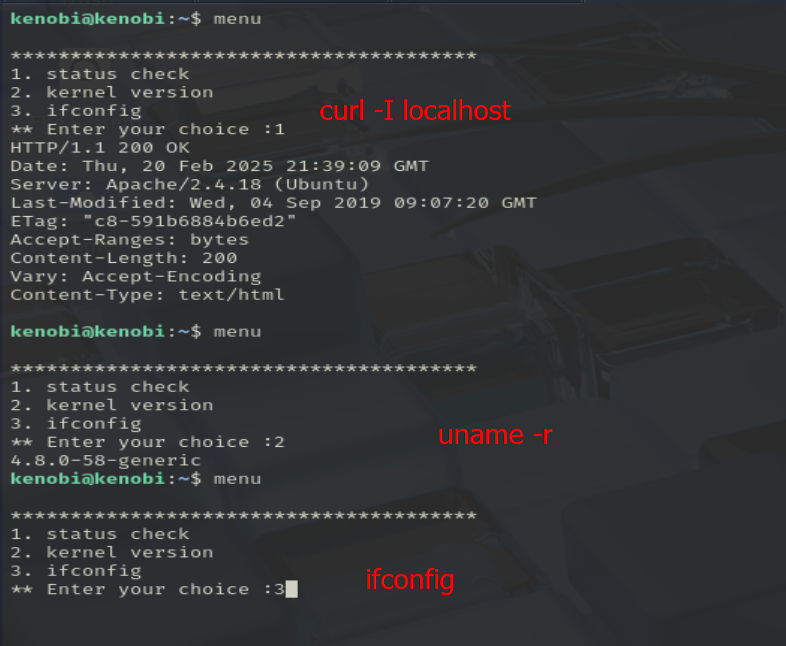

Kenobi
Análisis
Empezamos con un escaneo de todos los puertos y uno simple de servicios:


¿Cosas a destacar? Vemos que existe un SMB en los puertos 139 y 445.
Podemos usar este comando para sacar un poco más de información y enumerar las carpetas compartidas:
nmap -p 445 --script=smb-enum-shares.nse,smb-enum-users.nse {ip_target}
Vemos que podemos logearnos como anonymous, vamos a intentar conectarnos desde nuestro sistema:
Al listar los archivos, vemos que existe un archivo log.txt. Podemos descargarlo con get log.txt.
En el archivo podemos encontrar información relevante como:
- Claves SSG

- Información sobre el servidor ProFTPD

El servidor FTP se está ejecutando en el puerto 21
Antes vimos que el puerto 111 estaba abierto con el servicio RCP. Vamos a sacar un poco más de información con el siguiente comando:
nmap -p 111 --script=nfs-ls,nfs-statfs,nfs-showmount {ip_target}
Vemos que la aplicación tiene montado el directorio /var
Sigamos viendo el servicio FTP y veamos qué versión de ProFTPD tiene instalado:

Es una versión bastante antigua del servicio, podemos buscar a ver si existe algún exploit para esta versión:
Tiene 4 en total
En el log.txt, vimos que existe un usuario kenobi, que lo podemos usar en el FTP.

De esta forma, conseguimos copiar los archivos key de ssh de la otra máquina a nuestro PC. Nos la copiamos a nuestro directorio, le cambiamos los permisos e iniciamos sesión con ella por ssh:

Sacamos la flag del usuario kenobi:

d0b0f3f53b6caa532a83915e19224899
Intentemos ahora escalar privilegios. La máquina está preparada para escalar privilegios con permisos de los archivos. Vamos a buscar algún archivo con el SUID activado (esto permite que cualquier usuario pueda ejecutar el archivo con los mismos permisos que el creador de este). Vamos a buscar algún archivo con estas características:
find / -perm -u=s -type f 2>/dev/null
El único destacable, al menos porque no me suena de nada, es menu, voy a ejecutarlo a ver qué pasa:

Parece que este menu está ejecutando los siguientes comandos:
Ponemos los siguientes comandos en la terminal:

Esto básicamente está creando un script con el contenido /bin/bash, le da todos los permisos para que la aplicación menu lo pueda ejecutar, y exporta el directorio actual al PATH.
Y si ahora ejecutamos el menu y ponemos la opción 3:

Somos root.